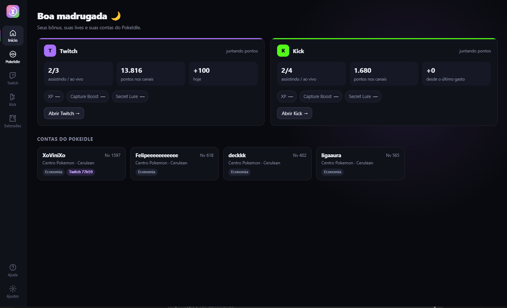

Contas do PokeIdle
Até 4 contas (a regra do jogo), cada uma com o login separado. Entre com Google, Discord ou e-mail e senha.
Suas contas do jogo, os pontos da Twitch e os da Kick juntos, leves e organizados. Você escolhe o modo de cada conta e o app cuida do resto.
Grátis e de código aberto · Windows 10/11 ou Linux 64 bits · Todas as versões

Até 4 contas (a regra do jogo), cada uma com o login separado. Entre com Google, Discord ou e-mail e senha.
Cena, Otimizado, Economia ou ULTRA: os modos do próprio jogo, escolhidos por conta. O app sugere, você decide.
A conta vira uma foto e continua caçando. Um clique e ela volta ao vivo.
Lives em segundo plano, preço real dos bônus de cada canal, pacotes de 1h a 10h e o baú de +50 pego sozinho.
Lives em segundo plano, foco no próximo bônus, prioridade para subs e chat dos canais.
O tempo do Bônus Twitch e do Bônus na Kick vem direto do PokeIdle, conta por conta.
Instale as extensões que você já usa no jogo (.zip, .crx ou pasta). Elas valem só nas contas do PokeIdle.
As dúvidas mais comuns com busca: como conectar extensão, qual modo usar, limite de contas e mais.
Menu lateral, cada coisa no seu lugar e só o essencial na tela. Ligue só o que você usa.
Medimos cada modo do PokeIdle numa conta real. O ULTRA gastou cerca de 30% menos memória e quase nada de CPU, e a conta continua caçando.
| Modo do jogo | Memória | CPU |
|---|---|---|
| Cena ligada | 543 MB | ~20% |
| Otimizado | 612 MB | ~24% |
| Economia | 592 MB | ~21% |
| ULTRA ★ | 383 MB | < 1% |
chmod +x). Se não abrir, instale o libfuse2.Baixe só por este site ou pelo GitHub oficial. Instaladores enviados em grupos podem ter sido alterados.